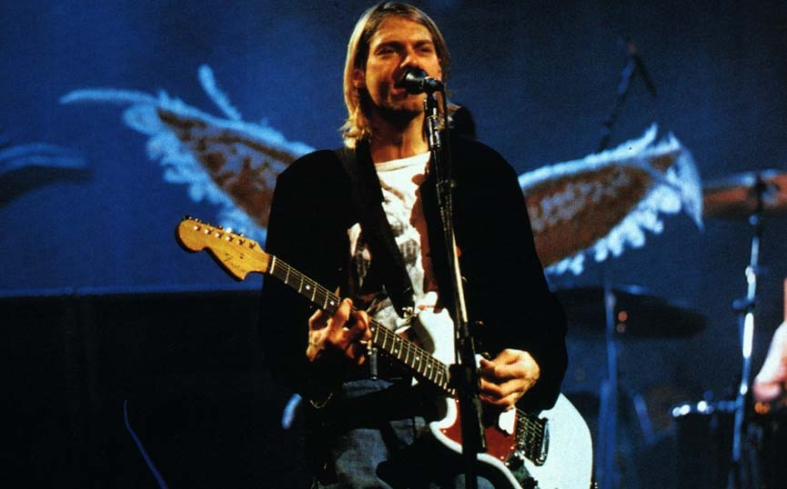
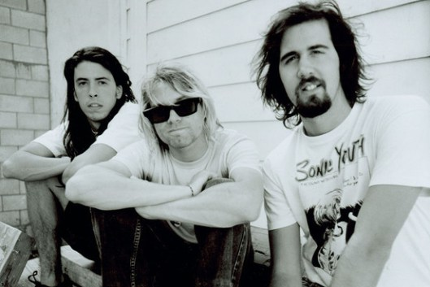
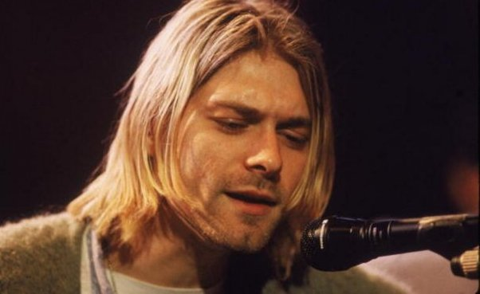
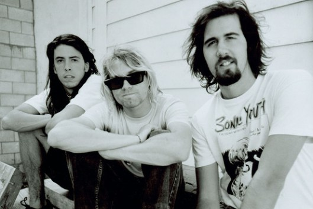
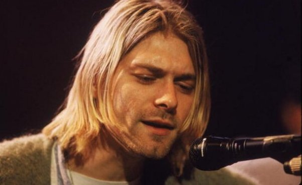

Formation And Early Years
Cobain and Novoselic met while attending Aberdeen High, although they never connected, according to Cobain. The pair eventually became friends while frequenting the practice space of the Melvins.
Cobain wanted to form a band with Novoselic, but Novoselic did not respond to
his requests, which included giving him a demo tape of his project Fecal Matter. Three years after the two first met,
Novoselic notified Cobain that he had finally listened to the Fecal Matter demo Cobain had given him, and suggested they start a group. The pair recruited Bob McFadden on drums, but after a month
the project fell apart. In winter of 1987, Cobain and Novoselic recruited drummer Aaron Burckhard. The three practiced material from Cobain's Fecal Matter tape, but started writing new material soon after forming.
During its initial months, the band went through a series of names, starting with Skid Row and including Pen Cap Chew, Bliss, and Ted Ed Fred. The group finally settled on Nirvana, which
Cobain said was chosen because "I wanted a name that was kind of beautiful or nice and pretty instead of a mean, raunchy punk name like the Angry Samoans". With Novoselic and Cobain having
moved to Tacoma and Olympia, Washington, respectively, the two temporarily lost contact with Burckhard. The pair instead practiced with Dale Crover of the Melvins, and
 Nirvana recorded its first demos in January 1988. In early 1988, Crover moved to San Francisco but recommended Dave Foster to the band as his replacement on drums. Foster's tenure with Nirvana lasted only a
few months; during a stint in jail, he was replaced by a returning Burckhard, who himself didn't stay with the band after telling Cobain he was too hung over to practice one day. Cobain and
Novoselic put an ad in Seattle music publication The Rocket seeking a replacement drummer which only yielded unsatisfactory responses. Meanwhile, a mutual friend introduced them to Chad Channing,
and the three musicians agreed to jam together. Channing continued to jam with Cobain and Novoselic, although the drummer noted, "They never actually said 'Ok, you're in.'", and Channing played his
first show with the group that May.
Nirvana recorded its first demos in January 1988. In early 1988, Crover moved to San Francisco but recommended Dave Foster to the band as his replacement on drums. Foster's tenure with Nirvana lasted only a
few months; during a stint in jail, he was replaced by a returning Burckhard, who himself didn't stay with the band after telling Cobain he was too hung over to practice one day. Cobain and
Novoselic put an ad in Seattle music publication The Rocket seeking a replacement drummer which only yielded unsatisfactory responses. Meanwhile, a mutual friend introduced them to Chad Channing,
and the three musicians agreed to jam together. Channing continued to jam with Cobain and Novoselic, although the drummer noted, "They never actually said 'Ok, you're in.'", and Channing played his
first show with the group that May.
{kind=link}
Early Releases
Nirvana released its first single, "Love Buzz", in November 1988 on the Seattle independent record label Sub Pop. The following month, the band began recording its debut album, Bleach, with local producer Jack Endino Bleach was highly influenced by the heavy dirge-rock of the
 Melvins and Mudhoney, 1980s punk rock, and the 1970s heavy metal of Black Sabbath. Novoselic said in a 2001 interview with Rolling Stone that the band had played a tape in their van while on tour that had an album by The Smithereens on one side and an album by the black metal band Celtic Frost on the other, and noted that the combination probably played an influence as well. The money for the recording sessions for Bleach, listed as $606.17 on the album sleeve, was supplied by Jason Everman, who was subsequently brought into the band as the second guitarist. Though Everman did not actually play on the album, he received a credit on Bleach because, according to Novoselic, they "wanted to make him feel more at home in the band". Just prior to the album's release, Nirvana insisted
on signing an extended contract with Sub Pop, making the band the first to do so with the label.
Following the release of Bleach in June 1989, Nirvana embarked on its first national tour, and the album became a favorite of college radio stations. Due to increasing dissatisfaction with Everman over the course of the tour, Nirvana canceled the last few dates and drove back to Washington. No one told Everman he was fired at the time, while Everman later claimed that he actually quit the group. Although Sub Pop did not promote Bleach as much as other releases, it was a steady seller, and had initial sales of 40,000 copies. However, Cobain was upset by the label's lack of promotion and distribution for the album. In late 1989, the band recorded the Blew EP with producer Steve Fisk.
In a late 1989 interview, Cobain noted that the band's music was changing. He said, "The early songs
were really angry ... But as time goes on the songs are getting poppier and poppier as I get happier and happier. The songs are now about conflicts in relationships, emotional things with other human beings". In April 1990, the band began working with producer Butch Vig at Smart Studios in Madison, Wisconsin on recordings for the follow-up to Bleach. During the sessions, Cobain and Novoselic became disenchanted with Channing's drumming, and Channing expressed frustration at not being actively involved in songwriting. As bootlegs of Nirvana's demos with Vig began to circulate in the music industry and draw attention from major labels, Channing left the band. That July, the band recorded the single "Sliver" with Mudhoney drummer Dan Peters. Nirvana asked Dale Crover to fill in on drums
for a seven-date American West Coast tour with Sonic Youth that August. In September 1990, Buzz Osborne of the Melvins introduced the band to Dave Grohl, who was looking for a new band following the sudden break-up of Washington, D.C. hardcore punks Scream. A few days after arriving in Seattle, Novoselic and Cobain auditioned Grohl, with Novoselic later stating, "We knew in two minutes that he was the right drummer".
Melvins and Mudhoney, 1980s punk rock, and the 1970s heavy metal of Black Sabbath. Novoselic said in a 2001 interview with Rolling Stone that the band had played a tape in their van while on tour that had an album by The Smithereens on one side and an album by the black metal band Celtic Frost on the other, and noted that the combination probably played an influence as well. The money for the recording sessions for Bleach, listed as $606.17 on the album sleeve, was supplied by Jason Everman, who was subsequently brought into the band as the second guitarist. Though Everman did not actually play on the album, he received a credit on Bleach because, according to Novoselic, they "wanted to make him feel more at home in the band". Just prior to the album's release, Nirvana insisted
on signing an extended contract with Sub Pop, making the band the first to do so with the label.
Following the release of Bleach in June 1989, Nirvana embarked on its first national tour, and the album became a favorite of college radio stations. Due to increasing dissatisfaction with Everman over the course of the tour, Nirvana canceled the last few dates and drove back to Washington. No one told Everman he was fired at the time, while Everman later claimed that he actually quit the group. Although Sub Pop did not promote Bleach as much as other releases, it was a steady seller, and had initial sales of 40,000 copies. However, Cobain was upset by the label's lack of promotion and distribution for the album. In late 1989, the band recorded the Blew EP with producer Steve Fisk.
In a late 1989 interview, Cobain noted that the band's music was changing. He said, "The early songs
were really angry ... But as time goes on the songs are getting poppier and poppier as I get happier and happier. The songs are now about conflicts in relationships, emotional things with other human beings". In April 1990, the band began working with producer Butch Vig at Smart Studios in Madison, Wisconsin on recordings for the follow-up to Bleach. During the sessions, Cobain and Novoselic became disenchanted with Channing's drumming, and Channing expressed frustration at not being actively involved in songwriting. As bootlegs of Nirvana's demos with Vig began to circulate in the music industry and draw attention from major labels, Channing left the band. That July, the band recorded the single "Sliver" with Mudhoney drummer Dan Peters. Nirvana asked Dale Crover to fill in on drums
for a seven-date American West Coast tour with Sonic Youth that August. In September 1990, Buzz Osborne of the Melvins introduced the band to Dave Grohl, who was looking for a new band following the sudden break-up of Washington, D.C. hardcore punks Scream. A few days after arriving in Seattle, Novoselic and Cobain auditioned Grohl, with Novoselic later stating, "We knew in two minutes that he was the right drummer".
{kind=link}
Mainstream Success
Disenchanted with Sub Pop and with the Smart Studios sessions generating interest, Nirvana decided to look for a deal with a major record label since no indie label could buy the group out of its contract. Following repeated recommendations by Sonic Youth's Kim Gordon, Nirvana signed to DGC Records in 1990. The band subsequently began recording its first major label album, Nevermind. The group was offered a number of producers to choose from, but ultimately held out for Butch Vig. Rather than recording at Vig's Madison studio as they had in 1990, production shifted to Sound City Studios in Van Nuys, Los Angeles, California. For two months, the band worked through a variety of songs in its catalog. Some of the songs, such as "In Bloom" and "Breed", had been in Nirvana's repertoire for years, while others, including "On a Plain" and "Stay Away," lacked finished lyrics until mid-way through the recording process. After the recording sessions were completed, Vig and the band set out to mix the album. However, the recording sessions had run behind schedule and the resulting mixes were deemed unsatisfactory. Slayer mixer Andy Wallace was brought in to create the final mix. After the album's release, members of Nirvana expressed dissatisfaction with the polished sound the mixer had given Nevermind. Initially, DGC Records was hoping to sell 250,000 copies of Nevermind, which was the same level they had achieved with Sonic Youth's Goo. However, the album's first single "Smells Like Teen Spirit" quickly gained momentum, thanks in part to significant airplay of the song's music video on MTV. As it toured Europe during late 1991, the band found that its shows were dangerously oversold, that television crews were becoming a constant presence onstage, and that "Smells Like Teen Spirit" was almost omnipresent on radio and music television. By Christmas 1991, Nevermind was selling 400,000 copies a week in the US. In January 1992, the album displaced Michael Jackson's Dangerous at number one on the Billboard album charts, and also topped the charts in numerous other countries. The month Nevermind reached number one, Billboard proclaimed, "Nirvana is that rare band that has everything: critical acclaim, industry respect, pop radio appeal, and a rock-solid college/alternative base." The album would eventually sell over seven million copies in the United States, and over 30 million worldwide. Citing exhaustion, Nirvana decided not to undertake another American tour in support of Nevermind, instead opting to make only a handful of performances later that year. In March 1992, Cobain sought to reorganize the group's songwriting royalties (which to this point had been split equally) so that they were more representative of the fact that he wrote the majority of the music. Grohl and Novoselic did not object to Cobain's request, but when the frontman asked for the agreement to be retroactive to the release of Nevermind, the disagreements between the two sides came close to breaking up the band. After a week of tension, Cobain ended up receiving a retroactive share of 75 percent of the royalties, and bad feelings about the situation remained within the group afterward. Amid rumors that the band was disbanding due to Cobain's health, Nirvana headlined the closing night of England's 1992 Reading Festival, where Cobain personally programmed the performance lineup. Nirvana's performance at Reading is often regarded by the press as one of the most memorable of the group's career. A few days later, Nirvana performed at the MTV Video Music Awards where, despite the network's refusal to let the band play the new song "Rape Me" during the broadcast, Cobain strummed and sang the first few bars of the song before breaking into "Lithium". At the ceremony, the band received awards for the Best Alternative Video and Best New Artist categorie. DGC had hoped to have a new Nirvana album by the band ready for a late 1992 holiday season release; since work on it proceeded slowly, the label released the compilation album Incesticide in December 1992. A joint venture between DGC and Sub Pop, Incesticide collected various rare Nirvana recordings and was intended to provide the material for a better price and at better quality than was available via bootleg copies. As Nevermind had been out for 15 months and had yielded a fourth single in "In Bloom" by that point, Geffen/DGC opted not to heavily promote Incesticide, which was certified gold by the Recording Industry Association of America the following February
{kind=link}
{kind=link}
Final Months And Cobain's Death
In February 1993, Nirvana released "Puss"/"Oh, the Guilt", a split single with The Jesus Lizard, on the independent label Touch & Go. Meanwhile, the group chose Steve Albini, who had a reputation as a principled and opinionated individual in the American indie music scene, to
record its third album. While there was speculation that the band chose Albini to record the album due to his underground credentials, Cobain insisted that Albini's sound was simply the one he had always wanted Nirvana to have: a "natural" recording without layers of studio trickery. Nirvana traveled to Pachyderm Studio in Cannon Falls, Minnesota in that February to record the album. The sessions with Albini were productive and notably quick, and the album was recorded and mixed in two weeks for a cost of $25,000.
Several weeks after the completion of the recording sessions, stories ran in the Chicago Tribune and Newsweek that quoted sources claiming DGC considered the album "unreleasable". As a result, fans began to believe that the band's creative vision might be compromised by their label. While the stories about DGC shelving the album were untrue, the band actually was unhappy with certain aspects of Albini's mixes. Specifically, they thought the bass levels were too low, and Cobain felt that "Heart-Shaped Box" and "All Apologies" did not sound "perfect". Longtime R.E.M. producer Scott Litt was called in to help remix those two songs, with Cobain adding additional instrumentation and backing vocals.
In Utero debuted at number one on the Billboard 200 album chart in September 1993. Time's Christopher John Farley wrote in his review of the album, "Despite the fears of some alternative-music fans, Nirvana hasn't gone mainstream, though this potent new album may once again force the mainstream to go Nirvana." In Utero went on to sell over 3.5 million copies in the United States.
Simultaneous with the release of the album, Nirvana was recording the video for "Heart-Shaped Box" with director Anton Corbijn, based on a detailed treatment prepared by Cobain. The video, featuring an old man wearing a Santa-hat who ascends a ladder and affixes himself to a crucifix, an obese angel modeled after the Visible Man angel appearing on the cover of In Utero, and a tree fruiting fetuses, has been interpreted as an allegory of Heroin addiction, and is "more or less acknowledged as the apical manifestation of Kurt Cobain's highly personal alphabet of psychological symbolism." There is some question as to whether or not the old man appearing in the video is actually William S. Burroughs. The video won multiple awards at
 1994's MTV Video Awards.
That October, Nirvana embarked on its first tour of the United States in two years. For the tour, the band added Pat Smear of the punk rock band Germs as a second guitarist. In November 1993, Nirvana recorded a performance for the television program MTV Unplugged. Augmented by Smear and cellist Lori Goldston, the band sought to veer from the typical approach to the show, opting to stay away from playing its most recognizable songs. Instead, Nirvana performed several covers, and invited Cris and Curt Kirkwood of the Meat Puppets to join the group for renditions of three of their songs.
In early 1994, the band embarked on a European tour. Nirvana's final concert took place in Munich, Germany, on March 1. In Rome, on the morning of March 4, Cobain's wife, Courtney Love, found Cobain unconscious in their hotel room and he was rushed to the hospital. A doctor from the hospital told a press conference that Cobain had reacted to a combination of prescription Rohypnol and alcohol. The rest of the tour was canceled. In the ensuing weeks, Cobain's heroin addiction resurfaced. An intervention was organized, and Cobain was convinced to admit himself into drug rehabilitation. After less than a week in rehabilitation, Cobain climbed over the wall of the facility and took a plane back to Seattle. A week later, on Friday, April 8, 1994, Cobain was found dead of a possible self-inflicted
shotgun wound to the head at his Seattle.
1994's MTV Video Awards.
That October, Nirvana embarked on its first tour of the United States in two years. For the tour, the band added Pat Smear of the punk rock band Germs as a second guitarist. In November 1993, Nirvana recorded a performance for the television program MTV Unplugged. Augmented by Smear and cellist Lori Goldston, the band sought to veer from the typical approach to the show, opting to stay away from playing its most recognizable songs. Instead, Nirvana performed several covers, and invited Cris and Curt Kirkwood of the Meat Puppets to join the group for renditions of three of their songs.
In early 1994, the band embarked on a European tour. Nirvana's final concert took place in Munich, Germany, on March 1. In Rome, on the morning of March 4, Cobain's wife, Courtney Love, found Cobain unconscious in their hotel room and he was rushed to the hospital. A doctor from the hospital told a press conference that Cobain had reacted to a combination of prescription Rohypnol and alcohol. The rest of the tour was canceled. In the ensuing weeks, Cobain's heroin addiction resurfaced. An intervention was organized, and Cobain was convinced to admit himself into drug rehabilitation. After less than a week in rehabilitation, Cobain climbed over the wall of the facility and took a plane back to Seattle. A week later, on Friday, April 8, 1994, Cobain was found dead of a possible self-inflicted
shotgun wound to the head at his Seattle.
{kind=link}
Also See ;
Death of Kurt Cobain »
Kurt Cobain's Suicide Note »

{kind=link}


 


